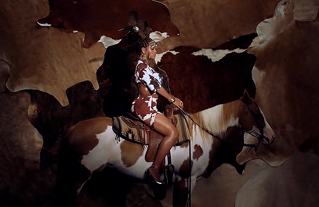
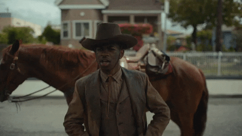
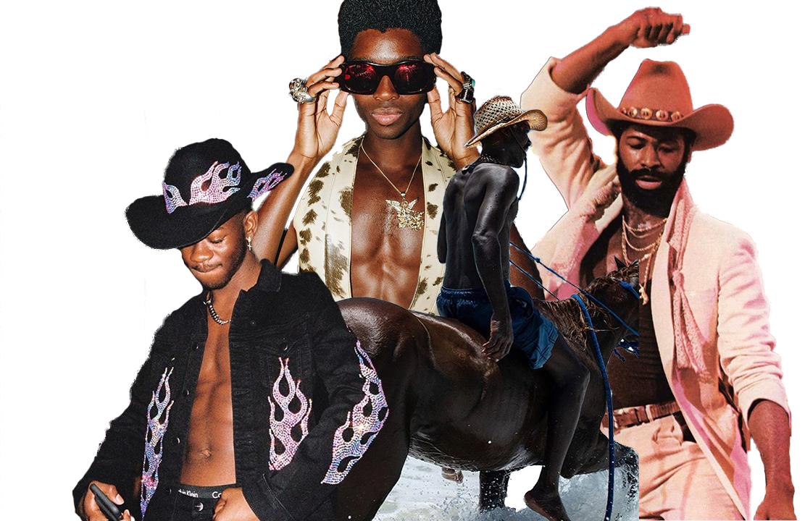

@theyeehawagenda chronicles the ways in which western aesthetics have always been present in black popular culture. For many years some of the most popular black celebrities both old and new have been drawing on inspiration from the Old West.
JUST LOOK AT POP CULTURE
